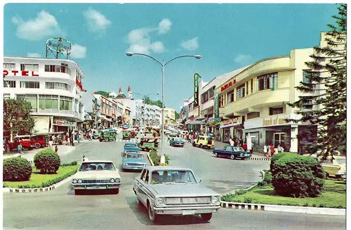

The City Where The Past Meets Present
Nestled in the cool mountains of Northern Luzon, Baguio City has long been a beloved destination for travelers seeking respite from the heat of the lowlands.
Then and Now
Once a quiet retreat for American colonial officers, Baguio has grown into a bustling hub that still maintains its serene, cool atmosphere.
Today, the city is a fusion of old and new: lush forests remain at its heart, offering peaceful escapes amidst the bustling urban environment.
Join us as we explore the stories, sights, and experiences that have shaped Baguio into the dynamic city it is today.